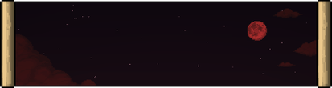
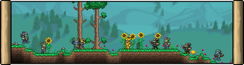
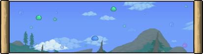
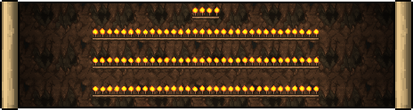
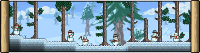
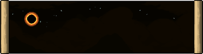
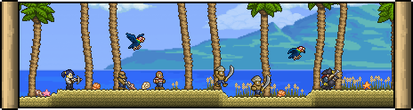
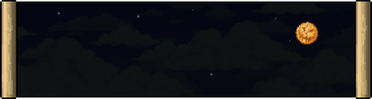
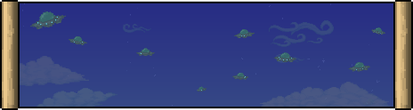

Eventos (alguns também conhecidos como invasões ) são ocasiões temporárias em que diversos tipos de
inimigos especiais surgem, a maioria com taxas de aparição elevadas, até mesmo perto de NPCs , e
atacam os jogadores. Alguns eventos podem ocorrer aleatoriamente durante o jogo, enquanto outros
podem ser desencadeados por certos itens de invocação ou circunstâncias especiais. Os eventos geram
inimigos únicos, não vistos durante o jogo normal, que podem, por sua vez, dropar itens exclusivos
obtidos apenas durante o evento. Alguns eventos também trazem visuais e uma atmosfera únicos, como
uma lua alterada e shaders visíveis aplicados à tela. Os eventos também são acompanhados por músicas
especiais , que complementam sua temática. Dependendo do evento específico, eles podem durar até que
um certo limite de tempo seja atingido ou até que um certo número de inimigos seja derrotado.
Eventos Pré-Hardmode
Lua de Sangue
A Lua de Sangue é um evento que ocorre ao longo de toda a noite , das 19h30 às 4h30, afetando apenas
a camada superficial da Terra .
As Luas de Sangue são sinalizadas pela mensagem de status " A Lua de Sangue está surgindo... ". Toda
a água do mundo, inclusive a subterrânea, ficará vermelha como sangue durante o evento, incluindo a
chuva e a própria lua . Um filtro vermelho será aplicado à tela quando o jogador estiver na
superfície. A habilidade de acelerar o tempo dormindo em uma cama também será desativada.
O evento aumentará significativamente as taxas de surgimento de criaturas nos biomas da superfície,
além de gerar novos e perigosos inimigos, alterando também seu comportamento e condições de
surgimento
O poder de pesca aumenta em 1,1 vezes. No entanto, a pesca também pode atrair inimigos únicos.

Lua de sangue
Exército Goblin
O Exército Goblin é um evento onde inimigos Goblin únicos surgem. Quando um Exército Goblin se
aproxima, uma das duas mensagens de status a seguir aparecerá: “ Um exército goblin está se
aproximando do oeste! ” / “ Um exército goblin está se aproximando do leste! ”

Exército Goblin
Chuva de Slime
Chuva de Slime é
um evento onde diferentes tipos de lodo caem constantemente
do céu. Se o jogador
matar 150 lodos antes do evento terminar naturalmente, o Rei Lodo aparecerá. Se o Rei Lodo já tiver
sido derrotado, basta matar 75 lodos para que ele reapareça.

Chuva de Slime
Exército do Ancião
O Exército do Ancião é um evento exclusivo de crossover com Dungeon Defenders 2 que pode ser
iniciado após resgatar o NPC Taberneiro , encontrado em qualquer camada após derrotar o Devorador de
Mundos / Cérebro de Cthulhu . O objetivo é proteger o Cristal de Eternia de ondas de inimigos que
surgem de Portais Misteriosos , buscando destruí-lo. Se o Cristal for destruído pelos inimigos, o
evento termina. Se ele for mantido em segurança até que todas as ondas sejam eliminadas, o evento é
concluído.
Tanto o Cristal quanto seu Suporte são comprados do Taberneiro por moedas . Os jogadores sofrem o
efeito negativo Choque Criativo durante o evento, que impede a remoção ou colocação de blocos dentro
de um determinado alcance.
Cada onda se torna progressivamente mais difícil e apresenta uma variedade maior de inimigos. Além
disso, a dificuldade do evento aumenta de acordo com o progresso do jogador. Se ativado antes de
qualquer chefe mecânico ser derrotado, o evento consiste em 5 ondas. Se ativado após a derrota de
pelo menos um chefe mecânico, o evento consiste em 7 ondas. Após a derrota do Golem , o evento se
torna ainda mais difícil com o surgimento da chefe Betsy na onda final. Betsy aparecerá apenas uma
vez durante cada evento, e derrotá-la completará o evento. O evento também contém 2 mini-chefes: o
Ogro e o Mago Negro .
Exército do Ancião
O Deus da Tocha
O Deus da Tocha é um mini-evento que ocorre quando 100 tochas se acumulam próximas umas das outras
no subsolo. As tochas posicionadas começam a lançar pequenas bolas de fogo contra o jogador,
extinguindo-se no processo. As bolas de fogo causam 40/80/120 de dano e viajam em linha reta através
dos blocos . Elas também podem surgir de tochas localizadas fora da tela.
Enquanto o evento estiver ativo, o jogador sofre o efeito negativo Apagão , que reduz
significativamente sua visão à luz.
Quando todas as tochas se extinguirem, o evento termina. Após um breve período, as tochas reacendem
e, se 100 ou mais tochas tiverem sido ativadas, o Favor do Deus da Tocha aparecerá no inventário do
jogador . O jogador não poderá participar do evento novamente depois de possuir um Favor do Deus da
Tocha, seja no inventário ou após tê-lo consumido, e precisará criar um novo personagem para
fazê-lo. Um jogador que não tenha consumido um Favor do Deus da Tocha pode participar e concluir o
evento continuamente, obtendo mais Favores do Deus da Tocha, contanto que não possua nenhum no
inventário.

O Deus da Tocha
Eventos Hardmode
Legião de Gelo
A Legião de Gelo é um evento que funciona de forma semelhante ao Exército Goblin , mas requer um
item para ser iniciado, o qual só pode ser obtido no Hardmode. Durante o Natal , os inimigos
deixam cair presentes . Se o mundo estiver no Hardmode, esses presentes têm 1/13 (7,69%) de
chance de conter um Globo de Neve , que é usado para invocar a Legião de Gelo.

Legião de Gelo
Eclipse Solar
O Eclipse Solar é um evento do Hardmode onde o sol nasce, obscurecido pela lua, reduzindo
drasticamente a luz natural a um nível mais escuro que a noite. Os inimigos comuns dos biomas são
substituídos por inimigos especiais que podem surgir perto de NPCs, com muito mais frequência e em
maior número do que o normal.

Eclipse Solar
Invasão Pirata
A Invasão Pirata é um evento muito semelhante ao Exército Goblin . Ela pode surgir aleatoriamente ou
ser invocada usando um Mapa Pirata , que pode ser obtido ao derrotar qualquer inimigo no bioma
Oceano durante o Hardmode .

Invasão Pirata
Lua de Abóbora
A Lua das Abóboras é um evento com temática de Halloween que dura até o amanhecer do dia seguinte.
Diferentemente da maioria dos outros eventos, a Lua das Abóboras acontece em ondas distintas. Cada
onda é concluída ao se obter pontos suficientes derrotando inimigos, sendo que as ondas mais
avançadas têm maior dificuldade. Se inimigos suficientes forem derrotados, o evento eventualmente
entrará na onda final, onde os inimigos do evento surgem indefinidamente.

Lua de Abóbora
Loucura Marciana
O evento Loucura Marciana é um evento pós- Golem com temática de invasão alienígena. Este evento se
diferencia dos demais por exigir que, para iniciá-lo, o jogador encontre uma Sonda Marciana
aleatoriamente na superfície e no espaço sideral e entre em seu campo de visão. Assim que a Sonda
Marciana detectar o jogador, ela precisa sair da tela sem ser destruída.

Loucura Marciana
Eventos Lunares
Os Eventos Lunares são um tipo único de evento que gera quatro pilares diferentes, os Pilares
Celestiais , espalhados uniformemente pelo mundo. Ao se aproximar de um pilar, inimigos com temas
específicos surgem. Existem quatro pilares diferentes: o Pilar Solar , o Pilar do Vórtice , o Pilar
da Nebulosa e o Pilar da Poeira Estelar . Inicialmente, todos os pilares são cercados por um escudo
protetor. Para danificar e eventualmente derrotar um pilar, é necessário derrotar um certo número de
inimigos relacionados a ele.
.png)